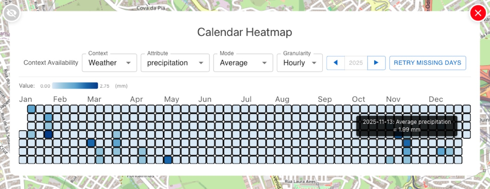
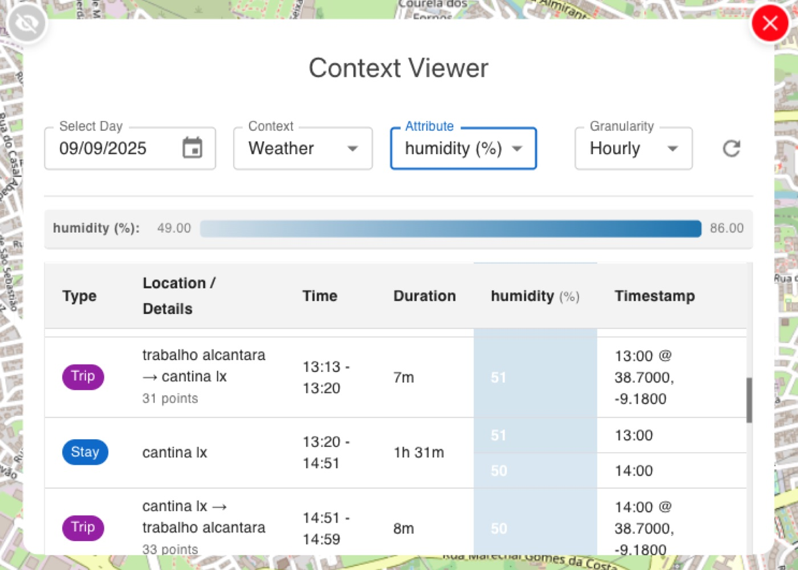
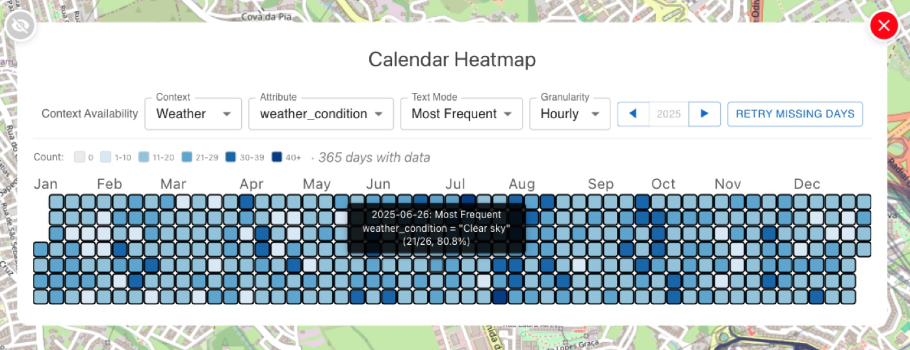
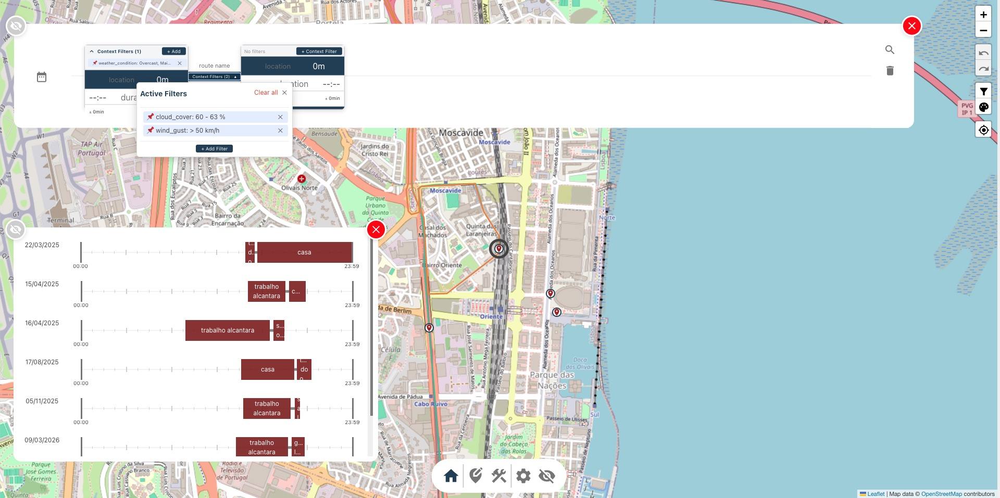

MSc thesis · Instituto Superior Técnico
Contextualize MySteps: personal reminiscence in context
Lifelogs record where we were, but not what it was like. I built a way to enrich years of existing GPS data with real weather after the fact, and three interfaces to explore it.

The problem
When people recall a past day, the weather and surroundings are among the things they remember most. Lifelogging systems rarely store them, though. The few that do capture context while recording, from a single provider, and can't enrich a lifelog that already exists.
MySteps is a geo-temporal lifelogging platform developed at IST that combines GPS tracks with personal annotations. My goal was to add external context to it retroactively, over periods of years, without being tied to a single context type or provider.
What I built
- The Context Layer. An extensible architecture in which each context (weather, traffic, news…) is a plugin. Shared components group GPS points into spatial cells of about 1 km², fetch only data that is still missing, combine sources attribute by attribute, and deal with the rate limits, quotas and failures of free APIs.
- The Weather Plugin. The proof of concept. After comparing several weather services, it combines Open-Meteo, World Weather Online and Meteostat to provide 26 hourly and daily attributes for every stay and trip.
- Three interfaces, one per scale. A Calendar Heatmap for a whole year, a Context Viewer for the stays and trips of a single day, and Context Filters that extend the existing Visual Queries with weather criteria, such as finding every trip with wind gusts above 50 km/h.



Evaluation
I ran a user study with 17 participants on a synthetic two-year lifelog combined with real weather data.
What I learned
Most of the hard work was invisible: making unreliable free data sources behave like one dependable service. On the interface side, the study showed that people want context to answer questions (“when did I walk home in the rain?”) more than to decorate their timeline. That's why the filters came out on top.